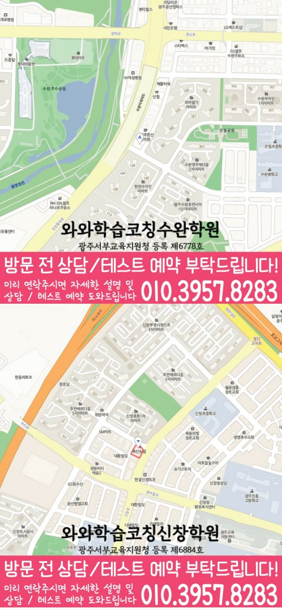

소리와 철자 연결
알고 있는 글자나 단어를 소리 내어 읽어 보세요. 처음 보는 단어에서 멈췄다면 들은 소리와 철자를 연결하는 부분부터 확인합니다.
공부 방법
신가동 학생을 위한 초등 영어 공부 안내입니다. 소리·단어·짧은 문장 중심으로 어려운 부분과 다음 복습을 정리해 보세요. 와와학습코칭학원 수완점의 수강 학년과 과목별 조건은 지점 안내에서 확인할 수 있습니다.
알고 있는 글자나 단어를 소리 내어 읽어 보세요. 처음 보는 단어에서 멈췄다면 들은 소리와 철자를 연결하는 부분부터 확인합니다.
외운 단어를 짧은 문장이나 그림과 함께 확인하세요. 뜻을 말할 수 있는 것과 문장 전체를 이해하는 것을 나누어 기록합니다.
짧은 글을 읽은 뒤 누가 무엇을 했는지 말해 보세요. 읽기 속도보다 이해한 내용과 도움이 필요한 부분을 남기는 데 초점을 둡니다.
| 살펴볼 기록 | 다음 공부 | 확인할 내용 |
|---|---|---|
| 글자를 읽다가 멈춤 | 아는 소리와 낯선 철자를 구분 | 도움 없이 읽은 낱말 표시 |
| 뜻은 아는데 문장을 이해하지 못함 | 그림·문맥과 단어 뜻 연결 | 문장 뜻을 자기 말로 설명 |
| 읽은 내용을 기억하기 어려움 | 짧은 글을 나누어 읽기 | 누가 무엇을 했는지 말하기 |
학생이 스스로 공부를 정리하기 위한 일반적인 방법입니다. 지점의 실제 수업·평가·숙제 운영을 뜻하지 않습니다.
신가동에서 초등 영어 공부를 준비한다면 학교 진도와 현재 사용하는 교재, 혼자 해 본 기록을 함께 정리해 보세요. 어려운 단어·문장과 답을 고른 근거를 표시합니다.
학교명은 제공된 지역 자료의 참고 목록입니다. 학교 전담반·제휴·모든 학교의 내신 지도를 의미하지 않습니다.
광주 광산구 임방울대로 310 아이비타워 406
초등 영어 안내: 초3~초6
와와학습코칭학원 수완점의 초등 영어 기본 안내 학년은 초3~초6입니다. 현재 수강 가능 여부와 시간표는 상담에서 확인해 주세요.
과목별 예외 조건과 현재 개설 여부는 신가동 초등 영어 수강 조건에서 먼저 확인해 주세요.
알파벳을 읽고 쓸 수 있는지, 소리와 철자를 연결할 수 있는지, 짧은 문장의 뜻을 이해하는지를 나누어 살펴보세요. 실제 파닉스 수업의 시작 학년과 개설 시간은 지점 수강 안내에서 별도로 확인해야 합니다.
맞힌 개수와 함께 혼자 설명한 내용, 도움 없이 다시 해결한 부분을 기록해 보세요. 같은 방식으로 모든 문제를 반복하기보다 아직 막히는 부분을 다음 복습으로 연결합니다.
공부 방법은 개념과 문제에서 무엇이 어려운지, 다음에 무엇을 복습할지 점검하는 안내입니다. 학습계획은 학교 일정과 실제 가능한 시간에 그 공부를 배치하고 실행 기록으로 분량을 조정하는 안내입니다.
와와학습코칭학원 수완점의 초등 영어 수강 안내에서 해당 학년과 과목별 조건, 위치를 확인할 수 있습니다. 현재 개설 여부와 시간표는 010-6839-8283으로 전화 또는 문자 상담해 주세요.


SAME LOCAL PAGE
신가동 지역의 과목별·학년별 페이지 23개를 목적별로 묶었습니다. 필요한 조합을 펼쳐서 바로 이동해보세요.
초등영어 CONSULTING
초등 영어는 빠른 진도보다 단어, 소리, 짧은 문장 읽기, 영어 학습 습관을 안정적으로 만드는 과정이 중요합니다.